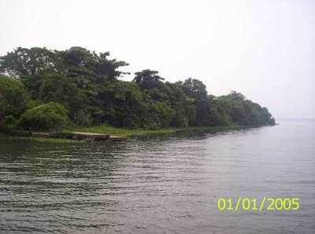

Kottayam is a city in the Indian state of Kerala. It is the district headquarters of Kottayam district, located in south-west Kerala.
Kottayam is located in the basin of the Meenachil River at an average elevation of 3 metres above sea level, and has a moderate climate.
Kumarakon bird sanctuary

A paradise for bird watchers, Kumarakom Bird Sanctuary or Vembanad Bird Sanctuary is situated on the banks of Lake Vembanad in kavanar River basin. The place is spread across a huge area of 14 acres providing a natural habitat to about 91 species of local birds and 50 species of migratory birds.
Islands of pathiramanal

The island derives its name from the word 'Pathiramanal' which means 'sands of night'. Lying in the middle of Venbanad Lake, the island houses birds like pintail duck, common teal, darter and Indian shag etc. The place is only accessible via backwater cruises, speed boat and motor boat.
Illikal kallu

Located at a height of 6000 ft above the sea level in the Western Ghats of Kottayam, Kerala, Illikkal Kallu is a major tourist attraction and one of the most pristine spots in all of India. Situated in Moonnilavu Village, Meenachil taluk, the nearest city to the summit is Teekoy. Besides several other factors which make this peak unique, the most prominent feature is that half the boulder of the majestic rock has fallen apart